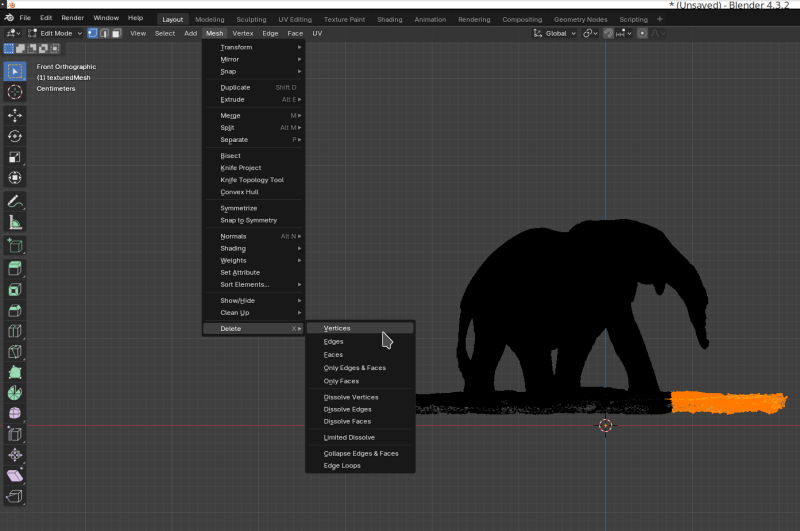
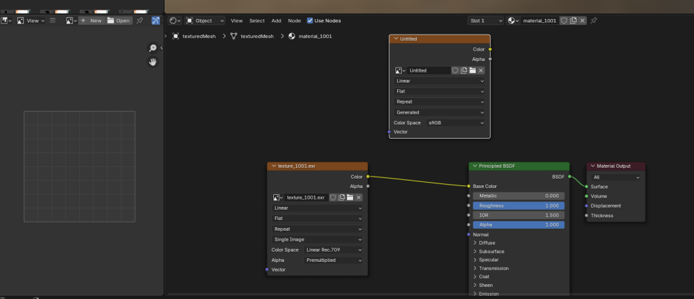
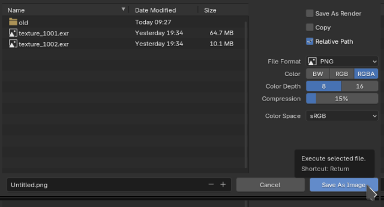
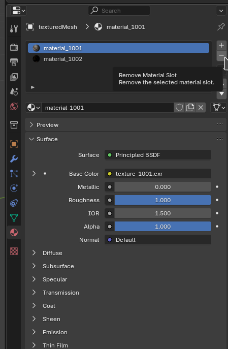
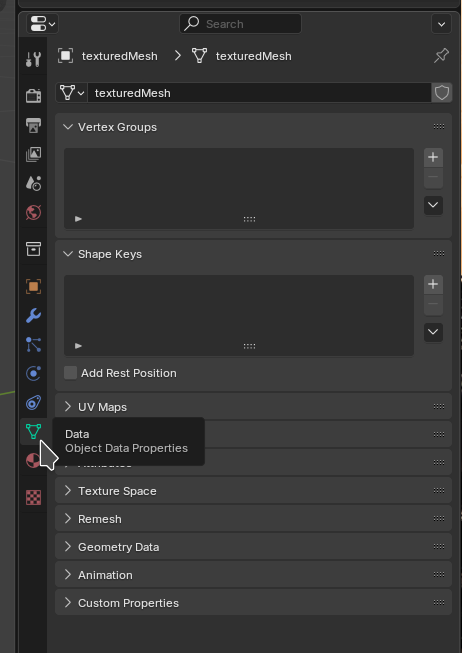

What
In a post from roughly a year ago I wrote about 3D scanning and compared techniques and products on the market at the time. Instead I found that photogrammetry and, by extension, structured light scanning is much more interesting at the moment.
Commercial scanners are still rapidly improving and there are price drops by the day. Yet I’ve learned that there is no one type of scanner for all uses and that craming all the processing into a small handheld device for a price point under 1k Eur leads to inevitable limitations.
I’ve experimented with photogrammetry for a couple of days and I’ll share my photography setups, software configurations and findings along the way.
(Rotate: [Click]+[Drag], Move [Shift]+[Click]+[Drag], Zoom [Mouse Wheel], Touchscreen / Pinch-to-Zoom on mobile)

note: the 3D models shown above are scaled down below 25mb file size for uploading to GitHub and displaying on the web. The full models (248.2mb tree stump, 105.6mb neptun) look better as you can see in the screenshots:
Contents
Contents
When
3D scaning has many touching points with other fields. Taking measurements during renovations, experimenting with positioning of furnature, extending games with custom 3D models, 3D maps for robot localisation, virtual reality and augmented reality applications, 3D printing and more.
Due to this I’ve been keen on improvements in the technology for a long time and keep going back to experiment from time to time.
Why
The more I’ve looked into photogrammetry the more intersting it got. There are a number of topics involved:
- mechanics in camera positioning and turntables
- electronics, light barriers, to trigger cameras at fixed angles
- photography best achieved with industrial cameras, digital single-lens reflex camera (DSLRs) [2] or mirror-less cameras for faster triggering
- effects of lighting, shadows, colors, photography parametes like angle, exposure and lens types.
- algorithms that relate to optical tracking and the field of robotics like the Scale-invariant feature transform (SiFT) to track motion between shots
- open-source software like Meshroom that utilize a data-driven pipeline approach with highly configurable state-of-the-art algorithms
Background
Working Principle
In photogrammetry we take photos of an object from a large number of varying angles. Similar to software that produced 2d panoramas - and visual robot localisation, and robot tracking for that matter - the 3D reconstruction software will try to find matching features in pairs of images. Using the coordinates of the matching features it can then calculate the relative viewing angles of the cameras that took the images.
Ideally we would have multiple perfectly calibrated cameras that take images from multiple equally-spaced angles at one instant.
In practice we have a lot less cameras, perhaps only a single camera. We simulate multiple cameras by moving the object. Either by hand or by turn table. In that case a single camera will be intentionally treated as multiple destinct cameras at different positions by the algorithms.
If both feature detection and matching is accurate enough, we have enough data to calculate the position of points in 3D space.
Software
“Meshroom” is the current goto open-source software for photogrammetry. At frist glance it seems Blender-level complicated, but it is really easy to use and does the best it can to make complicated and state-of-the-art algorithms involved in photogrammetry accessible.
Download
It can be downloaded from the “AliceVision” [1] webpage and is one of the few software that can be downloaded, extracted and just run on any Linux system with Ubuntu I’ve used in the last 5 years or so. It seems they’ve properly statically linked dependencies it needs into the binaries. Yet its takes only roughly 2 GB of space - nothing compared to most of the Snap or Flatpaks that package entire copies of environments alongside browsers for web-based apps.
On my machine with an NVidia RTX 3060 it even detected NVidia CUDA automatically (you can check this using the ```nvidia-smi`` tool) and used graphics acceleration without any futher configuration whatsoever. Impressive.
wget https://www.fosshub.com/Meshroom.html?dwl=Meshroom-2023.3.0-linux.tar.gz
tar -xvf Meshroom-2023.3.0-linux.tar.gz
./Meshroom-2023.3.0/Meshroom
Data Pipleine
In the application you’ll see the data pipeline.
The software is used by adding a set of photos, ideally a couple of hundred photos from various angles, and then configuring parameters of each node and then triggering each node one-by-one left-to-right in the pipeline (right mouseclick -> “compute”).
Visualisation
Double-clicking on a node makes the output of that node appear in the 3D viewer in the top right of the Meshroom window.
We can, for instance, double-click on “FeatureExtraction” and then on the three dots below the 3D viewer to visualize the points that the feature extraction detected in the image.
That’s extremly useful when debugging issues when using turn tables related to the “FeatureExtraction” pickung up too much of the stationary background.

Steps of the Pipeline
A basic understanding of the algorithms involved and how Meshroom applies them is very helpful in troubleshooting. I’ve tried without bothering about the details at first. That didn’t get me very far. Researching more I ended up uncovered so many issues with my camera setup, the settings in the nodes and so on. It really helps to have a basic understanding of each node in the pipeline.
The goal of the pipeline is to take the 2D photographs, run heavy algorithms on them and output a mesh (set of hundred thousands of triangles oriented in 3D space that describe the shape of the object) alongside the texture (the color)
Going through the default pipeline in Meshroom:
- Camera Init
- reads the photos and their respective meta data
- remarks
- there is also a video node that can take frames from a video file
- the node also reads metadata from the images e.g. focal length. It may make sense to make sure we’re not loosing that information in our processing for instance when manually extracting frames from a video.
- I’ve found image of 1024x width to be a good balance for computation time.
- if meshing came out properly on the 1024x, we can rerun it over night with higher resolutions.
- the graphics cards VRAM seems to be the limiting factor for high resolutions, but with high-performance cloud providers used for A.I training and running LLMs you could always buy some compute for something useful like this.
- Feature Extraction
- tries to detect features in the individual images
- remarks
- default is to “Domain-size pooling Scale-invariant feature transform” (dsp-sift)
- it is very effective in picking up minute details making it perfect for robot localisation or motion of a camera around an object
- it’s a little less ideal in turn table scenarios, as it may pick-up the background and conclude the camera is stationary. That will typically make the output mesh unusable as the calculation of the 3D positions will be erroneous.
- we can additionally stick markers to the turntable. The printable CCTAGs depict circles of varying width and releative radius. If they are clearly seen in each of the images we can enable CCTAG3 [4] in the feature extraction to help match images.
- Image Matching
- will find pairs of consequetive images
- comparing each image to each other image would be computationally heavy and not neccessary in most cases as images are usually shot in sequence
- hence this nodes can use numbered sequences in the file names “SequentialAndVocabularyTree” and it is set to this by default. “Exhaustive” would compare each image to each other image.
- remarks
- I learned the hard way that using a fast spinning turntable and low shutter speed is really bad. It yields numbered shots that are not in order of angle of rotation. That completly throws off the Image Matching node as it asumes the incoming images are in order regarding position.
- Feature Matching
- this node will then compute the positional differences of the features in image pairs
- StructureFromMotion
- here it gets interesting: we now have the features and their relative positions in 2D to one another.
- with this information we can calculate the viewing angles in 3D for each photo - i.e. the positions of the cameras
- remarks
- the visualisation of this is very useful for further debugging issues
- if we see that the camera angles are not evenly spaced in 360 degrees around the object, then things went catastrophically wrong in the previous nodes
- inevitably the meshing will produce a shapeless mess (or a so-called “unförmiger brei” (ger.) a “shapeless porridge”)
- PrepareDepthScene, DepthMap, DepthMapFilter
- in essense these nodes produce a heatmap of depth, like a relief map for lack of a better word.
- remarks
- the “Downscale Factor” can significantly reduce compute time at a loss of quality
- the “DepthMapFilter” node has a setting “Min Consistant Cameras”. Points will only be considered that are matching in the data from multiple viewing angles. If you have only few images the documentation states it may make sense to lower this and “Min Consistant Cameras Bad Similarity” from 3 and 4 to 2 and 3 respectively [3]
- Meshing
- produces an intermediate mesh
- we have to filter that mesh in next node
- remarks
- we can set “Max Input Points” and “Max Points” here
- these parameters require a tradeoff: depending on the object we’re scanning we may rather want less outliers and a smooth surface or more detail at the expense of more outliers in the data.
- MeshFiltering
- we can then filter mesh triangles
- the idea here is that triangles with a large area in the mesh are likely due to outliers
- for instance, because a triangle was stretched far due to one of its points being way out of the range of the object we’re scaning.
- remarks
- theses setttings also differ from object to obect we’re scanning and thus requires manual experimentation on each scan
- luckliy due to the data-driven pipeline/node architecture of Meshroom we can just rerun only the later node without repeating all the computations from previous nodes
- Texturing
- the last node will produce the texture for the mesh
- this will “color” the model
- remarks
- Meshroom outputs files to the “MeshroomCache” directory next to the project file
- for instance to
MeshroomCache/Texturing/<some hash>/texturedMesh.[obj|mtl|exr]
Challenges
There were are a number of challenges that I’ve painfully experienced.
Most of theses are related to turntables scanning as I don’t have many cameras and wanted to automatically capture as opposed to walking around the object and manually taking 100+ photos.
The problems will manifest in the computed camera positions in Meshroom. IF the camera positions are not accurate, then the resulting mesh will go terribly wrong.
When using turntables we need to fool the algorithms in Meshroom to think the camera is moving and not the prop in a stationary environment.
- Turntable & Positioning
- the first turntable I built was made from wood cut round on a jigsaw with a bicycle chain glued around it to make a giant cog. A drill motor would drive it. It runs way too fast, it woobles.
- from there I used pieces from an old Lego set and contiously improved on that.
- smooth motion, a perfectly centered object and a large enough table space so that ideally the camera only captures the object and the rotating table is important.
- Picking up the background
- the SIFT algorithms are designed to capture whatever characteristic they can find. If you have a stationary cable behind the table in the image or even the tiniest of holes in a wall that are in focus, the algorithm will conclude the camera was stationary messing up the final mesh.
- Object Shadows
- this is particularly true for shadows. As the lamps are in fixed positions the shadows will be as well. Even worse they will be on the turn table.
- shadows can only be defeated by multiple light sources from multiple angles
- Background Shadows
- we also need to get rid of shadows - and also table corners for that matter - behind the turn table
- ideally we’d have a big open space behind the turn table so that the background is clearly out of focus
- I’ve used a large matt black mouse pad positioned such that corners are rounded. Black is great as it makes shadows less visible.
- on the other hand a white surrounding, if perfectly evenly lit, can be advantagous to reflect more light on the object
- Reflections
- similarly to shadows, spot light reflections also throw the algorithms off.
- ideally polarisation filters on the camera lenses and lamps are added to remove the shiny reflections.
- Turntable Surface & Reflections
- the turn table should be black as white surfaces show more reflections.
- the turn table itself does not need to be perfectly evenly coloured. In fact the opposite is better: adding positional markers like CCTags can help. After all we want to the algoirithms to pick up on the rotation, just not the background, shadows or reflections.
- Even spacing and ordering
- it’s extremely important the images are in order and the angles at which they were captured are more or less evenly spaced
- due to my Canon EOS 550d DLSR low shutter-speed I found that recording videos and taking every 10th frame of the resulting 15 fps 1080p video works better than individual captures.
- even spacing also makes it much easier to manually remove images that cause outliers by stepping through the images in Meshroom and viewing the computed viewing positions in Meshroom
How
Turntable Photography Setup
Next I’ll show how my photography setup has evolved of the past days.
I will share my capture setups and with the above information we can analyse the pitfalls I’ve encountered with each of them.
1) bicycle and drill turntable - spins too fast
As it turns out building proper turn tables is an art.
Sometime October 2023 I set out to build a first turn table base on an idea I had had for a longer time.
This wasn’t indended for photogrammetry and while the approach may work, this version is completly unusable for photogrammetry. The idea was to cut wood as round as possible with a jig saw. Rotating it against a disc sander would have helped, but I didn’t do that at the time. Then run the round plate on coasters. These were 3D printed and utilized ball bearings. It would have been better to have ruber ball bearings, soft wheels from inline skates of even Lego wheels to dampen vibration and noise.
I spray painted it white - white is not an ideal color for photogrammetry due to reflections - see above. Along the edges of the wood I glued a bicycle chain. To turn it into a large cog wheel.

A bicycle sprocket attached to an old drill motor turns the table - way too fast for this use case. The motion is also not smooth.

2) small shaky Lego turn - too much background
The next quick build utilized Lego a worm-gear turns a lego tire. The motor, taken from an early Lego Mindstorms set and the power supply from an early 90s railroad set to power it. Unfortunately the electic cables are beginding to loose their insulation, but they still work.


Not great. While Lego is probably the best and easiest way I currently have at hand to build this, the table movement is janky. The table is also too small to fill the full-frame of the camera and I later realized how important that is.
For lighting I used a Beurer “daylight lamp”. That works okayish, but you can see the glate on the object and the shadows due to the light coming from one location.
3) small Lego turn table - still too much background
To improve on that I’ve place a DVD on the wheel. Then later covered it in kitchen roll to give less reflective surface Meshroom can better pick up on.

Using this I got my first somewhat usable model - albeit only an approximately 120 degree range of fotos from the front was usable without confusing the algorithms - but the motivation was there to continue and enhance this.
4) larger Lego turn table - still too much background
A different part selection helped with a more smooth movement. The table size increased. Instead of a single light source I started using three desk lamps. Including the lamp with the broken base that I’ve replaced with a mason jar. These lamps use small 20-35 W “halogen” light bulbs.
The positioning in the image is not ideal. It’s better to have them shinign light in different angles, but primarily from the front.

5) heavy Lego turn table and black background - promising
I finally arrived at this. I thumbtacked two binder clips to the wall and use them to hold up my maticulously cleaned giant matt black mouse pad. The mouse pad is not pushed into the corner, but rather curved to not produce a corner the software could pick up.
The three desk lamps shine light from the front.
I’m using the more heavy wodden round white plate from the first turn table, but place on the lego contraption from before. The weight makes it move mor evenly.
As you can see in the first image the white surface is not ideal. It shows reflections.
The surface of the turn table doesn’t have to be perfectly even - quite the opposite in fact beacuse we want to it to be picked up - but should absorb reflections. To achive this I cut some black cardboard from a show box and placed that on the table.
Additionally I hope the black and white transition is easy to pick up. If not I’ll add the CTAG markers as well, though this requires a more complicated pipeline configuration in Meshroom.
Using that setup we can see that Meshroom now recognizes the camera locations much better.
We get a full 360 degree Mesh of the elephant. The uneven lighting and reflections make the incomplete and uneven (see mesh above).
5) dining table setup - too many reflections
The dining table setup uses a strong LED lamp above the table. I’ve taped some baking/parchment paper to it in order to disperse the light a bit better. Two desk lamps from the front help even out shadows. The black cardboard on the turntable hides the rest of the shadows.
Since my mouse pad isn’t perfectly uniform either and the image was overall too dark, I found that a white background that bounces the light back created better results.
At first I tried to capture in raw with 1/25, f10, iso1600. A lower aperture is better to keep the background out of focus, but less light arrives at the sensor meaning I need an higher ISO and lower shutter speed. The images turned outr beautifully and the rembg was able to remove the background almost perfectly.
Unfortunately the camera shutter is far too slow. I ended up with 75 images and that seems to be far too few for Meshroom to work.
So I went back to shooting video and extracting frames with FFmpeg. This time extracting every 2nd frame (every 10th would have likely been suffienct) and got 2028 images (around 5550 images seems to be sufficent for the elephant).
The images were only cropped without removing the background. I found that, if the images are properly shot and the background isn’t recognized as being fixed, then the additional information of the turntable surface helps Meshroom in calculating the camera positions correctly. Later we can cut the turn table out of the resulting mesh during post processing in Blender.
My Ryzen 5 3600 with 32 GB System RAM and RTX 3060 12 GB VRAM took the entire night to calculate the result.
The “minimal 2d motion” option on the “FeatureMatching” node in Meshroom is fantastic and making sure only evenly spaced camera positons are used, but here the “SequenceMatcher” produced perfect camera locations on the first try.
The resulting mesh was then decimated and cropped in Blender. The texture scaled to 1024px and converted to *.png. No further fixes were made.
We can clearly recognize the elephant, but the light reflections have chipped off parts all over. Especially on the trunk and side.
I’ve elminated background, capture and camera positioning as an issue, but reflections remain. I need better lighting control. Perhaps even polarisation filters to remove light reflections. Additionally elephant may not be ideal as a scaning object due to its reflective surfaces. I read scanning spray or isopropyl alcohol mixed with baby powder may help. The latter would make a mess.
6) More Experimentation
In the meantime I’ve ordered a cheap turntable made for turning television sets from eBay.
These were quite expensive for some time, but now - probably due to lack of use with modern large and lightweight flatplanel television - they are being sold off for cheap. It can apparantly carry up to 100 kg, which could make it possible to put a person on it which could be interesting.

Additionally I ordered a small light box. I’m hoping it will be nice and evenly lit with the white surface in the background reflecting much of the light onto the object. And while you can easily build such a thing with a card board box, pieces of paper an some fabric for light dispersion, this thing is foldable and ideal for temperary setups. It also has an integrated controllable ring light. Maybe I’ll be able to produce good photogrammetry results with this out of/in the box.
Now the turntable didn’t fit in the lightbox, so I stuck with the Lego turntable and some cardboard.
- the camera needs a considerable distance so that the near and far areas of the object and turn table are clearly in focus
- the best orientation for the lightbox is with the opened side facing towards the camera, not the camera facing through the ring light in the top as that limits the space for taking shots at different heights
- I’ve use black cardboard against reflections on the turntable surface, but added painter’s tape and four CCTAGS
- the ring light up top seems to be ideal for my usecases. There are still light reflections, but they stay more or less evenly spread out on the top of the model during rotation.
The CCTAGs are taken from the AliceVision Git-Repos [4].
The setup looks like this:
7) Best so far
The above setup can be further improved. I’ve added two worm gears. The two gears, one with 24 teeth and one with 16 teeth, reduce the speed to a comfortable speed for the camera to catch enough images. According to an online Lego gear ratio calculator [6] the contraption amounts to a total reduction of 960:1. I’m using the old Lego technic motor 5225 from the first Mindstorms kit. It rotates at around 375 RPM [7]. The table travels one full turn roughly every 3 seconds - in reality a bit slower due to the load. The motors have also lost a some power over the years.
When setting the speed to full on the train controller it rotates just slow enough for the EOS 550d camera to take still frames at 3 fps.
The camera can easily be triggered by shorting the wires of an old 2.5mm (not common the much more common 3.5mm) headphone cable. That way I don’t need to hold the camera trigger for the entire long rotation.
Doing this yields about 404 images for full rotations on three heights.
For lighting the lower portions of the object I’m using the Beurer daylight lamp from the front. Otherwise, with the higher resolution than when recording video, we would clearly see the uneven lighting.
Capturing Outdoors
Capturing outside with the right weather conditions can actually be easier than with a turn table setup. Especially out in the woods there is usually a lot of contrast rich debris or leaves for the photogrammetry software to pick up. We move the camera and don’t need to fool the software as with turntable setups and a stationary camera. The right weather conditions, ideally cloudy, make for an ideal even lighting with minimal shadows. The small focal length of smart phone cameras make them great for capturing sharp images at large depth ranges.
The tree stump shown above was captured with 4K video capture on a Samsung S22 smartphone. For this I walked around the stump three times holding the smartphone at a different height each time.
Image Capture
I’m using a Canon EOS 550d DSLR camera on a tripod. What worked best so far is to record video at 15 fps with the turntable spinning for a full rotation on three heights. Video with lots of frames is beneficial to reconstruct the shape better.
However the quality of the result texture greatly improves when capturing still images. The EOS 550d can manage roughly 3 fps in continuous shooting. With the turn table on the lowest possible speed and on three heights I get 109 images which is just so enough to reconstruct the elephant, but at a loss of detail in the shape. The resulting quality is much better than in video mode.
Helpful Bash scripts
After capture I use bash scripts to do some preprocessing along the lines of
#!/bin/bash
INP="06/in3"
OUT="06/in4"
for FILE in $INP/*.jpg
do
FILEBASE=$(basename ${FILE%.*})
echo $FILEBASE
# <<< PAYLOAD HERE >>>
done
The payload can be any of these:
Extract every 10th frame of a video
(replace *.jpg with *.MOV in the above script)
ffmpeg -i ${INP}/${FILEBASE}.MOV -vf "select=not(mod(n\,10))" -vsync vfr "${OUT}/${FILEBASE}-%03d.jpg"
Automatic neural net background removal
I’ve used this with the earlier Lego turntable contraptions as there was too much background noise in the images.
With a decent setup that keeps shadows and background out of the image, full-frame capture of the table and object this should be required. It’s also a bit error-prone, but an amazing gerneral trick to know.
Keeping the turntable far away from the background and making sure only the object is in focus helps alot with turn table setups.
rembg i ${INP}/${FILEBASE}.jpg ${OUT}/${FILEBASE}.png
Crop image
If you’ve captured something stationary on the side somwhere in the background it.
For raw photography we can use Darktable and batch apply cropping to all photos. This works by copying the crop action from the history and then pasting it during image selection.
Alternatively we can automate by cropping with imagemagick.
The first two numbers are the image width and height. The second and third are offset from left and top respectively.
convert ${INP}/${FILEBASE}.jpg -crop 710x710+150+25 ${OUT}/${FILEBASE}.jpg
Ideally we keep the camera focal length information in the input images EXIF information for Meshroom to use.
After theses steps the images are ready to be loaded into Meshroom.
Manually remove bad images
After completes “Structure from Motion” we can step through the images in the file browser pane and see where the corresponding camera positions were mapped to. It’s easy to recognize when a set of images was computed out of place. It’s often the case that some 10 - 20 of the images are completly off. We can take note of the filenames of these images, remove them, reimport the remaining subset and recompute in Meshroom.
A powerful trick
Surprisingly, even with the lightbox setup and images that looked visually perfect, at first Meshroom didn’t recognize the camera positions correctly. Black background alone didn’t help, rembg alone doesn’t work well on this model as the surface doesn’t have enough features, even with CCTAGs I was getting incorrect camera positions.
Then I had a breakthrough:
Using the scripts we can first crop most of the non-moving portions of the image as before. We use rembg to remove the background and get only the elephant. If we take the two images seperatly and cleverly combine them, we get perfect images for Meshroom.
To do this we overlay the elephant without background with a slice of the original image containing the turn table.
This works so well, because now, with these modified images, the majority of features are on the elephant and the turntable. Meshroom ignores the transparent background behind the object in the upper three quarters of the image and focuses on what is relevant.
The script to do this is a simple combination of the above scripts.
#!/bin/bash
INP="in3"
OUT="in4"
mkdir $OUT
for FILE in $INP/*.jpg
do
FILEBASE=$(basename ${FILE%.*})
echo $FILEBASE
# -- crop from top, leaving only table
convert ${INP}/${FILEBASE}.jpg -crop +0+600 ${OUT}/${FILEBASE}_table.jpg
# -- remove background
rembg i ${INP}/${FILEBASE}.jpg ${OUT}/${FILEBASE}_nobg.png
# -- combine the two
convert ${OUT}/${FILEBASE}_nobg.png ${OUT}/${FILEBASE}_table.jpg -gravity South -composite ${OUT}/${FILEBASE}.png
# -- cleanup
rm ${OUT}/${FILEBASE}_nobg.png
rm ${OUT}/${FILEBASE}_table.jpg
#break
done
Convert Texture
Meshroom produces rather large textures in *.exr format. As the textures are mapped with relative coordinates we can scale the texture down freely.
We can convert to 1024x1024px *.jpg.
convert -resize 1024 texture_1001.exr texture_1001.jpg
note: convert produces relatively dark images. Manually converting to *.jpg with Gimp produces better results.
Then we set that converted texture in Blender on the “material” / “principalized bdsd” / “base color” / “image file” setting after importing the model.
Mesh Editing
After we run the Meshroom pipeline we end up with a mesh that may have some points other than the model to be scanned in it, like the turntable surface for instance. The mesh is likely also has a very high polygon count and produces large files. We can fix both of these issues with Blender.
Viewing the Mesh
Some 3D viewers may behave strangely depending on the structure of the files. The 3D editing software Meshlab frequently crashes on my machine. g3dviewer doesn’t display meshes half of the time or without texture. f3d is more reliable. Blender is a bit tricky to use.
It seems that the textures in *.exr format exported by Meshroom are not well supported. Additionally *.mtl files with paths are not supported by some applications. STLs can be ascii or compressed with and without textures and these are supported by some applications, but not others. Large texture resolutions seems to cause problems. Also there are different options for mapping from the mesh to the texture that are supported by some formats and parsers, but not others.
The most reliable format seems to be “glTF” (*.glb). These files work on most viewers, with textures and also well with Three.JS on the web.
Cut off excess portions of the Mesh
We can either use “Custom Bounding Box” on the “Meshing” node in Meshroom or load the Mesh into Blender and edit it there.
In the Post on creating Sims 4 Furniture I’ve detailed how to select and remove portions of the mesh. Blender has a “limit selection to visible” feature that can be toggled in the top right half of the edit mode screen or by pressing [alt]+[z] that is important here. Next we align view to front, side and top and select and remove excess parts of the mesh by pressung [del].
Meshroom produces three files (mesh, material file and texture) in the MeshroomCache/<hash>/Texturing directory. If the model is highly detailed you may end up with more than one texture.
We load Blender. I’m using version 4.3.2.
Remove the default cube by pressing [del] and drag and drop the *.obj file to import it.
We can then cycle through front, side and top views
Select “Edit Mode” in the top left
Make sure to “toggle x-ray” so that Blender selects not only the points in front.
Next we select the potion to remove.
and delete it by pressing [DEL] or from the menu
After doing this for all four sides we have the mesh with out the excess.
Rotating and Centering
It’s likely the mesh is off-center and rotated incorrectly in the coordinate space. To fix this:
Select the entire object by pressig [A] or from the menu
We can then select move
and drag the object into position by clicking and pulling on the arrows
Next we select the rotate tool
and rotate the object into position my clicking and pulling the circular arrows
Reduce the Mesh
There are two ways I use to reduce a mesh. One way is to use the “decimate” modifier. The other is “Merge By Distance”.
Merge By Distance
To use “merge by distance” select the Mesh (press [A]) in “Edit Mode”. Then from the menue “Mesh” -> “Merge” -> “By Distance”. For the elephant 0.001m worked well.
By setting 0.02 we can make “low-poly” models.
Decimate
We can also use the “Decimate” modifier in Blender. In “Edit Mode” press [A] for select all. Then on the right pan open Tab for “modifier” (the wrench symbol). Click “Add Modifier” -> “Generate” -> “Decimate”.
Pulling the slider you can see the face count reducing. I’ve reduced from 40278 faces to below 10000 faces in my model. That gave me exported *.obj files that were 1,2 MB or compressed STL files with 534 kb.
In the top left make sure we’re in “object mode”

then in the bottom right click on the “modifier” tab.
and the “add modifier” button
From the menu we can select “Generate” -> “Decimate”
It will show the current “face count” in the bottom. If we reduce too far the model will loose detail. If we don’t reduce enough, the model will produce a huge file.
For my file I’ll go with 0.02. This brings the mesh into the neighbourhood of 20.000 faces.
Smoothen the Mesh
Another great Modifier ist “Smooth”. It can be added the same way as “decimate” with “Add Modifier” -> “Generate” -> “Smooth”.
This greatly improves the visual impression of the models as it removes outliers.
The process is nearly the same as with the “Decimate” modifier.
Texture Baking
On large detailed models Meshroom may produce two or more texture files.
The process to bring multiple textures into one is called “texture baking”. We may need to do this in order to properly export a GLTF (*.glb) file.
In the directory we may have already seen that there are two texture files texture_1001.exr and texture_1002.exr. Also in the “texture paint” tab we see that Blender shows two texture files side-by-side.
To setup “texture baking” we go to the “shading” tab.
Then on the right hand side click on the “Render” tab
We need to select “Cycles” as the render engine otherwise I’m told it won’t work.

Next we need a second new UV Map. To add one, we go to the “data” tab
and click on “+” to add a new uvmap - that is a mapping from mesh coordinates to texture (U and V) coordinates.
Blender shows a second UVMap UVMap.001, we select it.
Next we go to “UV Editting”
And via the menu or by pressing [U] and “Smart UV project” produce the UV map.
Note that there are two UV-Menu on the left and right side. We need to use the one on the right side.
Next click on “unwrap”
The view on the left will look odd, that’s normal.
We move back to the “shading” tab
By right clicking in an empty space in the node viewer in the bottom half of the screen, without another node selected, we can add a new “image texture” node
Click on “new”
and on “New Image”
We can now “bake” the texture. To do this select the “Render” tab on the right.
Unfold “Bake”
Set the “Bake Type” to “Diffuse”
Deselect “Direct” and “Indirect” leaving only “Color” unless you want to bake lighting effects.
On the bottom left of the screen, in the image window, select the texture
The image window will turn black as the texture is currently empty

Make sure the mesh is selected in the top right of the screen
Then back on the right lower side of the screen in the “render” tab click “bake”
You’ll then see the progress in the bottom center of the window

Once finished the result will show up in the bottom left in the image viewer.
We save it by clicking on the “hamburger” icon, the three horizontal lines and select “Image” and then “save”.
Give the newly created texture image a filename and click “save”
Remove old textures and use the new one
Now we need to tell Blender to use that new texture file when exporting.
To do this go to the “Texture Paint” tab.
Material tab on the right.

Click on the “-“ sign to remove the now obsolete old materials and textures
Next we add the new material.
To select the new texture image click on the yellow dot.
Select “Image texture” from the menu.
Click on “Open”
Select the file, click on “open”
It should then show the texture on the mesh properly again.
Remove the old UV Map
Now we can remove the old UV map.
For this, on the right, click on the “data” tab”
Unfold “UV Maps”
Select the old “UVMap” and click on “-“ to remove it
This should leave only the new UV map that matches with the new texture.
With that we’re done - it took only 45 clicks. The process could probably be scripted as Blender provides a Python API.
Export with Texture
The texture become visible in the “Texture Paint” tab. By default Meshroom produces “texture_1001.exr” texture files. You can convert them to png with convert -resize 1024x texture_1001.exr texture_1001.png then set them on the “Principled BDSF”/”Base Color” as described in my guide on 3D Modeling. Resizing to 1024x reduced the png size from 2 MB to 466 KB and worked fine.
STL doesn’t export with texture. When exporting Wavefront *.obj, Blender additionally writes an *.mtl file with the path to the texture. Since *.mtl are text files we can edit and replace the *.exr with *.png there. Ideally the texture is in the same directory as many 3d viewers don’t expect paths in the *.mtl.
In Blender we can easily export a GLTF (*.glb) file from the “File”/”Export” menu. Note that if the UV map isn’t properly unwrapped, there are more than one texture or too many faces in the mesh it may hang indefinitely.
We can just click “export”. I’m not using any special settings here.
Viewing the exported Mesh
We end up with an *.glb file.
It can be viewed in the f3d viewer.
Displaying on the Web
First I tried *.stl files with viewstl [5] , but Blender doesn’t export the texture when exporting to *.stl. Using *.obj + *.mtl + *.png means three files and that is not supported ‘viewstl’.
After a lot of trial and error I ended up with my own JavaScript wrapper for the Three.JS viewer and exporting to GLTF (*.glb). The file can also be shown with textures in the f3d viewer.
The wrapper works works with only three JavaScript includes GLTFLoader.js, OrbitControls.js and three.js and the custom include for Jekyll.
Progress
Conclusion
I’m fairly pleased with the results and I think they’re very reproducable. For small objects that fit into the lightbox this approach takes effort, but the results are likely comparable if not better to the cheap consumer grade 3D scanners.
I’ll probably be improving the setup further. It might be interesting to enhance this by getting a projector to project a grid onto the object. I’m not sure how to setup the software yet, but I know this has been done years ago in commercial products such as the “David SLS Scanner”. It seems to have been used in industrial setups. Such structured light scanning (SLS) setups require space and calibration. Frequently setting everything up, calibrating it and then removing it again would be tedious.
1] https://alicevision.org/#meshroom 2] https://en.wikipedia.org/wiki/Digital_single-lens_reflex_camera 3] https://meshroom-manual.readthedocs.io/en/latest/faq/reconstruction-parameters/reconstruction-parameters.html 4] https://github.com/alicevision/CCTag/tree/develop/markersToPrint 5] https://github.com/omrips/viewstl 6] https://gears.sariel.pl/#teeth 7] https://www.princeton.edu/~mae433/DATA_SHEETS/motorlego.html